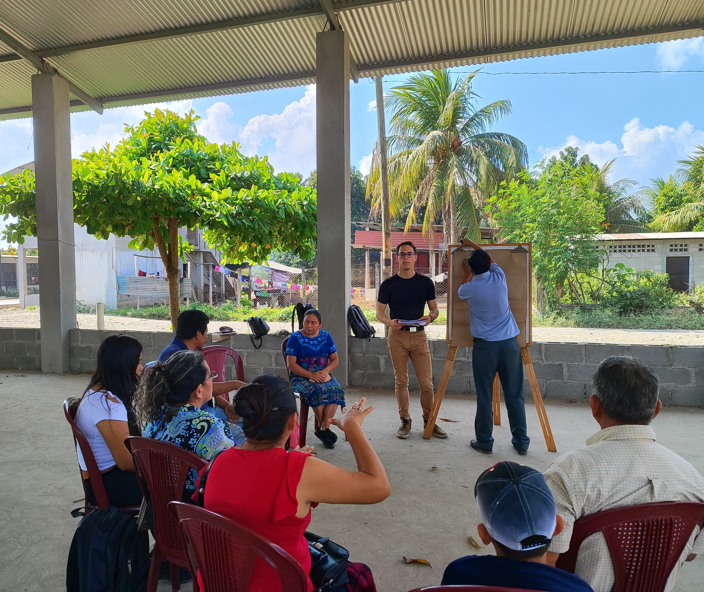

Field research
Science City, Guatemala
Citizen science for water quality: training, data stewardship and open dashboards for communities.
- Built an open monitoring workflow combining sampling, basic lab tests and an accessible data pipeline.
- Trained community coordinators and produced step-by-step handbooks to sustain the project.
- Co-designed an impact dashboard to support local decision makers and funding partners.